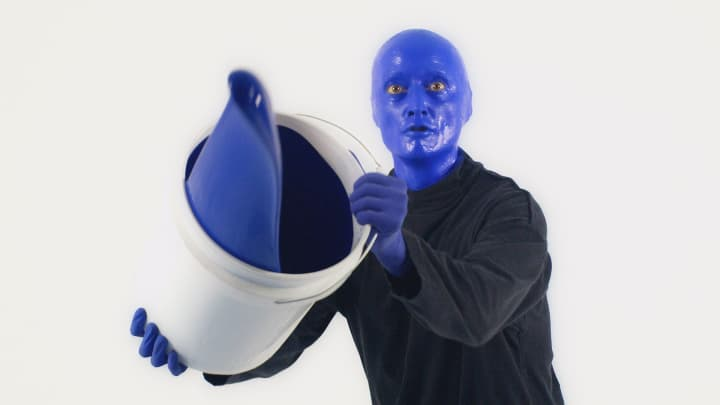
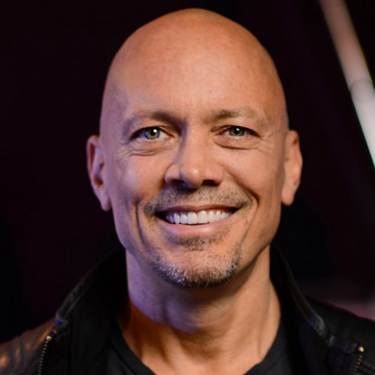

El grupo The Blue Man Group está compuesto por 3 personas, que fueron sus fundadores y no han variado, llevan arrastrando miles de shows a lo largo de su carrera, demostrando sus aptitudes y fantásticas cualidades mezcladas con un gran ritmo musical y un pintoresco show que te dejará sin palabras. Una gran innovación que capta la atención de cualquier persona que acuda a verlo en directo. Sencillamente maravilloso.
Sus miembros son los propios directores, actores y compositores musicales, lo que les hace abarcar un gran repertorio de habilidades, juntando todo esto, se obtiene un gran espectáculo como respuesta dignas de mostrar a todo el mundo.


Chris Wink
Actor y director americano, forma parte del grupo desde su creación, siendo co-fundador. Actualmente habiendo actuado en mas de 1200 shows demostrando sus cualidades.
Phil Stanton
Actor y director americano, forma parte del grupo desde su creación, siendo co-fundador. Actualmente habiendo actuado en mas de 1200 shows demostrando sus cualidades.
Matt Goldman
Actor y director americano, forma parte del grupo desde su creación, siendo co-fundador. Actualmente habiendo actuado en mas de 1200 shows demostrando sus cualidades.